Skyfall HTB - Writeup
Jul 08, 2026 · Linux Web Hard
El día de hoy vamos a resolver la máquina Skyfall de HackTheBox. Es una máquina Linux - Hard, con una cadena bastante larga: parte de una app web (Sky Storage) montada sobre MinIO, sigue con un bypass de ACL, una fuga de credenciales en MinIO, un pivote a HashiCorp Vault y termina con el abuso de un binario con sudo mal configurado.
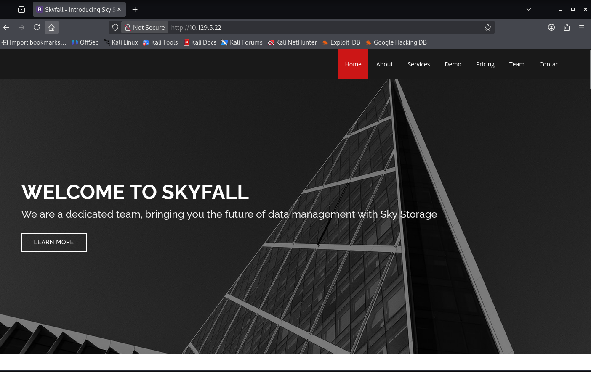
1. Enumeración inicial
Como siempre, empezamos con un escaneo de puertos completo con nmap:
nmap -p- --min-rate 10000 10.129.5.22Y luego un escaneo de versiones sobre los puertos que encontremos abiertos:
nmap -p 22,80 -sCV 10.129.5.22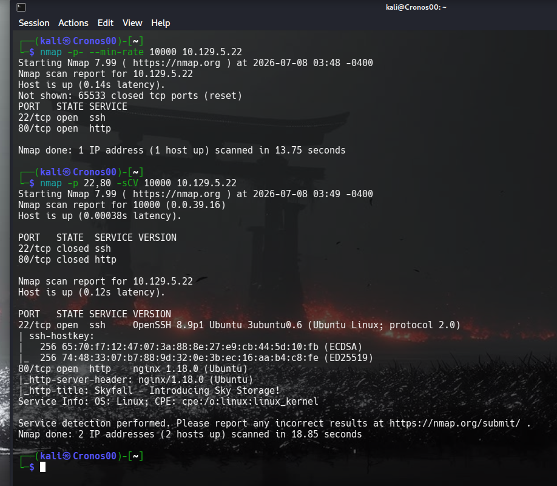
Solo dos puertos abiertos: 22 (OpenSSH 8.9p1 sobre Ubuntu) y 80 (nginx 1.18.0). El título de la página ya nos regala el nombre de dominio: Skyfall - Introducing Sky Storage!.
2. Reconocimiento web y vhosts
Agregamos skyfall.htb a nuestro /etc/hosts y entramos por el navegador. Nos encontramos con una landing page corporativa bastante genérica, del estilo "empresa de almacenamiento en la nube".
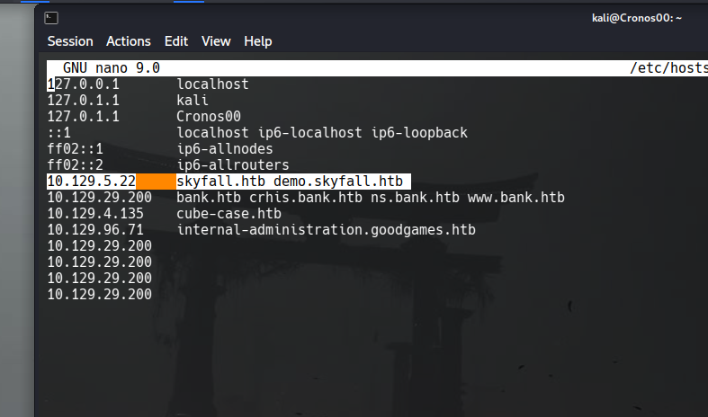
No hay mucho más que ver a nivel de contenido en el dominio principal, así que probamos fuzzing de subdominios (virtual hosting) usando el Host header:
ffuf -u http://10.129.5.22 -H "Host: FUZZ.skyfall.htb" -w /usr/share/seclists/Discovery/DNS/subdomains-top1million-20000.txt -ac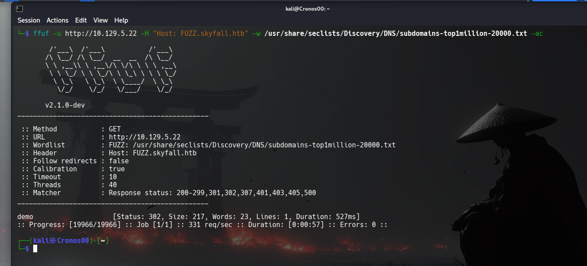
Encontramos el subdominio demo, que responde con un 302. Lo agregamos también al /etc/hosts y vamos a ver qué hay ahí.
3. Acceso a Sky Storage
El subdominio demo.skyfall.htb nos lleva a un login llamado "Sky Storage - Demo", y convenientemente nos dan las credenciales en la misma pantalla: guest / guest.
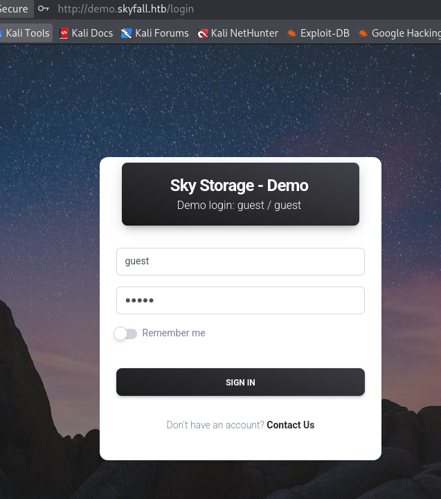
Con esas credenciales entramos sin problema al dashboard de la aplicación. Se trata de un panel hecho en Flask que expone una interfaz para gestionar archivos sobre un backend de almacenamiento tipo S3 (spoiler: es MinIO). En la barra lateral vemos las secciones Dashboard, Files, Beta Features, URL Fetch, MinIO Metrics, Feedback y Escalate.
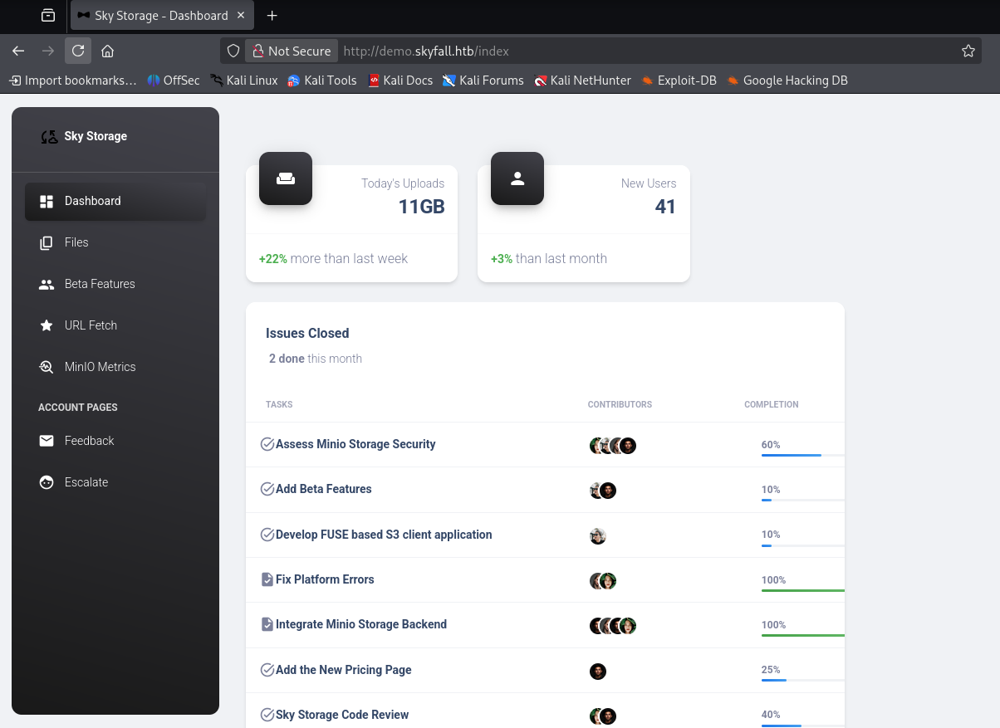
4. Explorando la aplicación
Antes de lanzarnos a atacar, vale la pena recorrer toda la superficie de la app para entender qué hace cada funcionalidad.
En Files tenemos nuestros propios archivos como usuario guest, incluyendo un Welcome.pdf de bienvenida y la opción de subir, descargar, renombrar y borrar archivos.
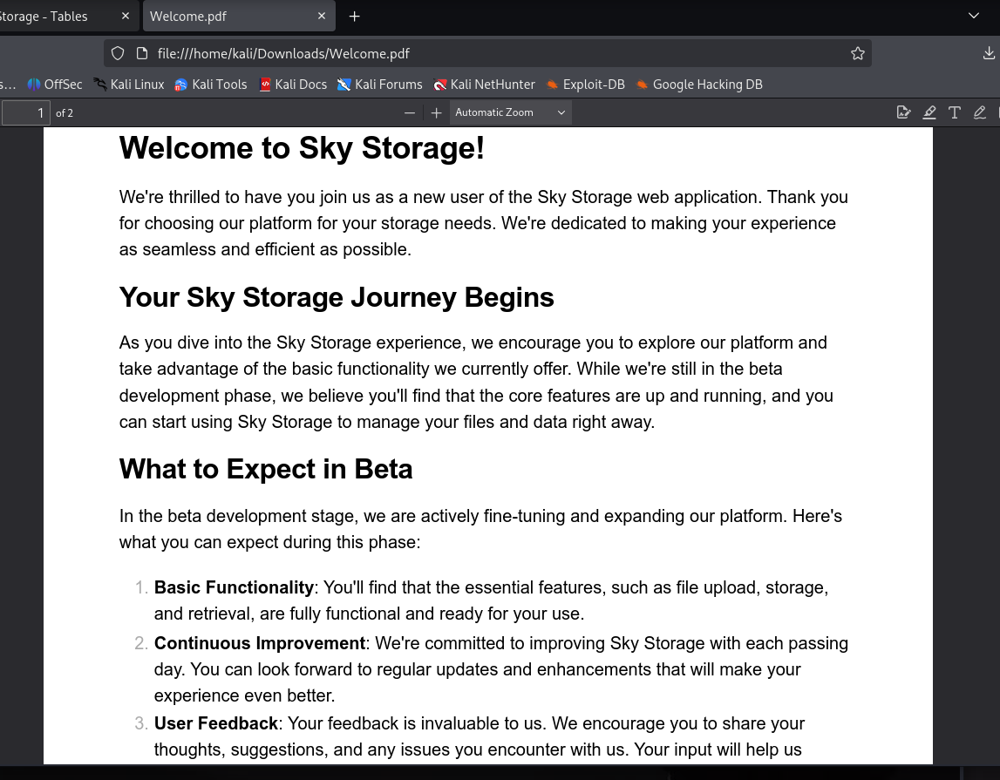
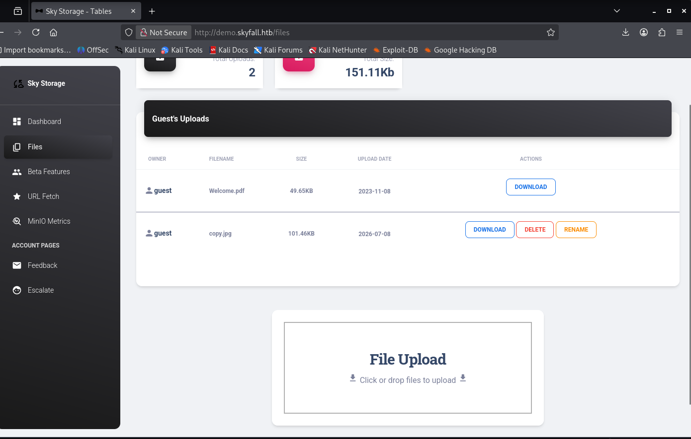
En Beta Features nos topamos con un 403: es una sección restringida a otro rol.
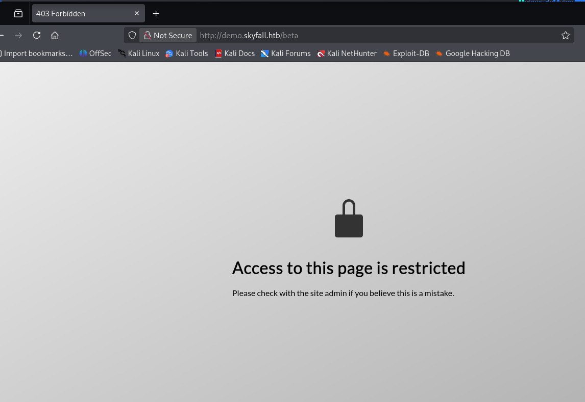
URL Fetch es la que más llama la atención: un formulario que pide una URL y la descarga al storage. Un candidato clásico a SSRF, lo dejamos anotado para más adelante.
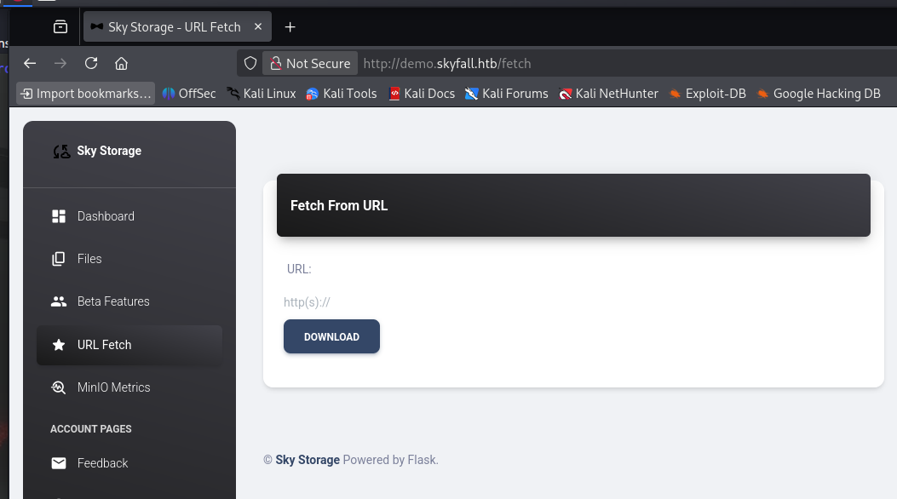
Feedback y Escalate son formularios de contacto hacia el equipo de soporte: uno para dejar comentarios y otro para escalar un ticket al admin. Los probamos, pero solo obtenemos una respuesta automática avisando que hay que esperar 24 horas.
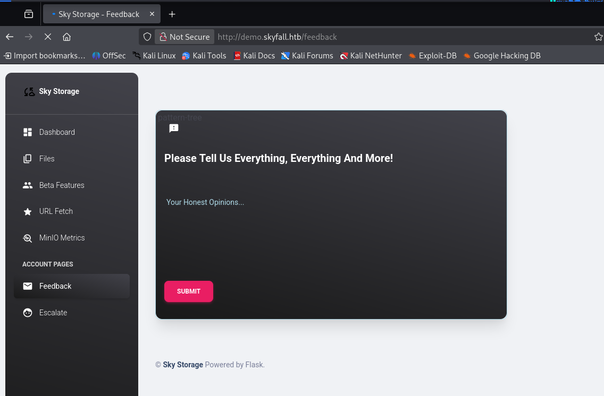
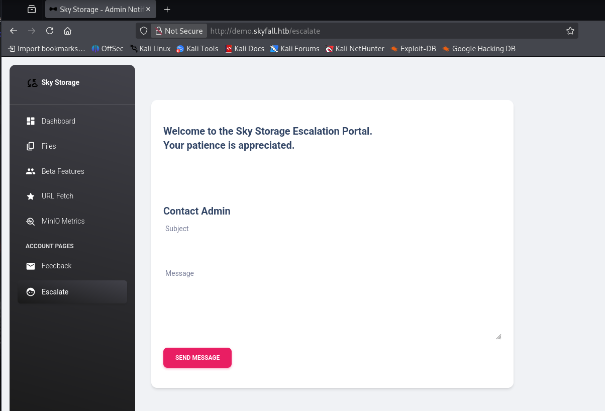
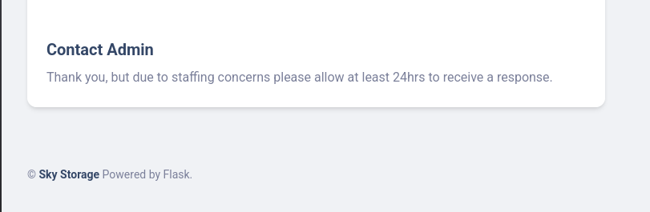
Quedan como superficie de ataque pendiente, pero por ahora el camino más prometedor es MinIO Metrics + URL Fetch.
5. Bypass del endpoint /metrics
Lanzamos un descubrimiento de contenido completo contra demo.skyfall.htb:
feroxbuster -u http://demo.skyfall.htb/ -w /usr/share/feroxbuster/raft-medium-directories.txt -x --recursion-depth 4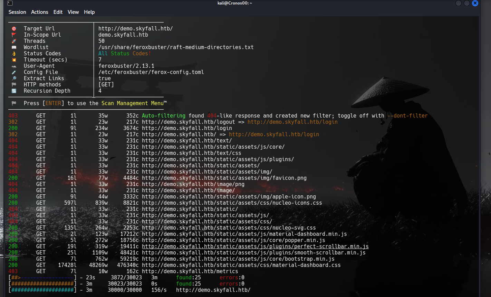
Entre los assets estáticos aparece /metrics devolviendo un 403: hay un endpoint interno bloqueado a propósito por el proxy. Interceptamos la petición con Burp para intentar un bypass y comprobamos que nginx no normaliza ciertos caracteres de espacio en blanco (como un salto de línea) antes de reenviar la ruta a Flask. Si al path le agregamos uno de esos caracteres, la comparación exacta del proxy (location = /metrics) deja de coincidir y el bloqueo no se aplica, pero Flask sigue resolviendo la misma vista.
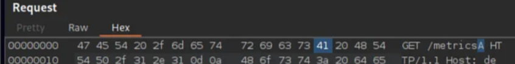
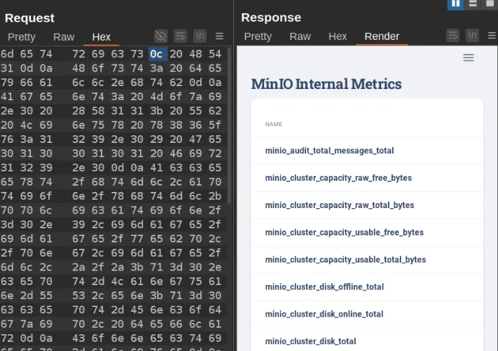
La respuesta renderiza una vista interna: "MinIO Internal Metrics". Repetimos el mismo truco directo desde el navegador con un salto de línea codificado (%0a):
http://demo.skyfall.htb/metrics%0aY entramos a la misma vista ya autenticados, ahora con más comodidad para leerla.
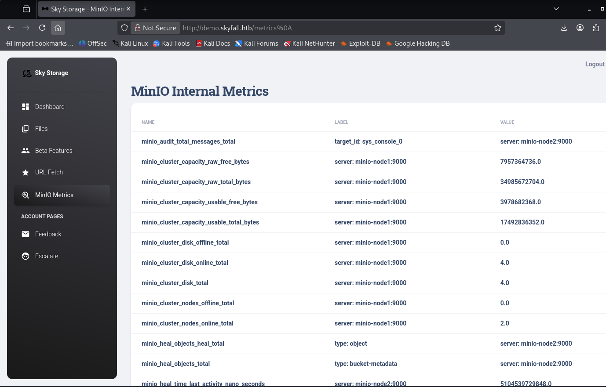
Ahí aparecen nombres internos: minio-node1 y minio-node2, en el puerto 9000. Agregamos un hostname que ya intuimos por convención (prd23-s3-backend.skyfall.htb) al /etc/hosts y probamos pegarle directo al endpoint público de métricas de MinIO:
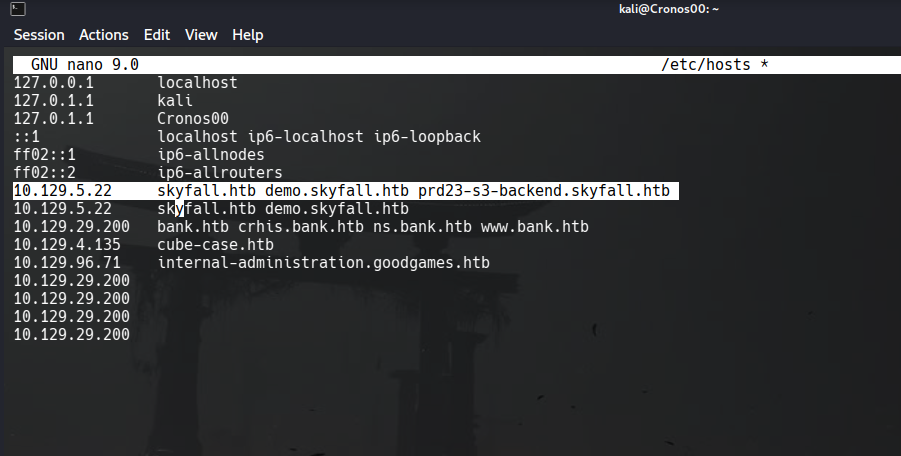
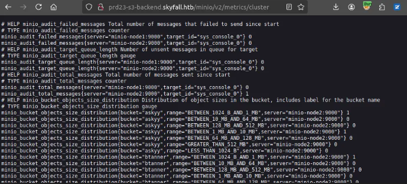
El endpoint /minio/v2/metrics/cluster responde sin pedir autenticación (MinIO trae MINIO_PROMETHEUS_AUTH_TYPE=public por defecto), confirmando que estamos hablando directo con el backend de almacenamiento.
6. CVE-2023-28432 en MinIO
Con la versión de MinIO identificada nos ponemos a buscar vulnerabilidades conocidas y aparece un historial de CVEs relacionados con fugas de información y del manejo de credenciales root.
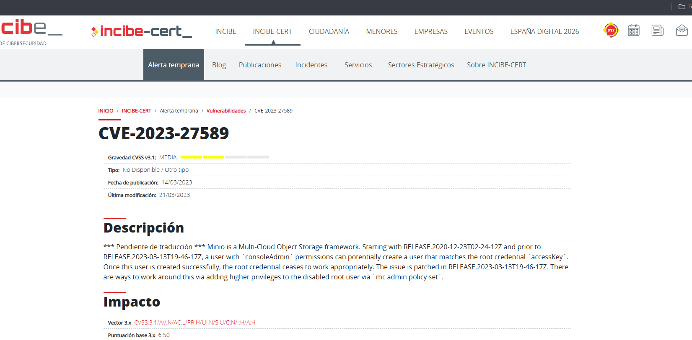
El fallo que realmente nos sirve aquí es CVE-2023-28432: un endpoint interno de bootstrap entre nodos del clúster (/minio/bootstrap/v1/verify), pensado solo para comunicación nodo-a-nodo, puede ser consultado directamente y devuelve toda la configuración de entorno del clúster en texto plano, incluyendo las credenciales root.
Al explotarlo obtenemos un volcado de configuración con las variables de entorno de MinIO:
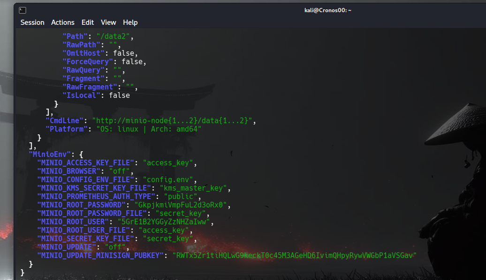
Entre las variables filtradas están MINIO_ROOT_USER y MINIO_ROOT_PASSWORD, las credenciales root del clúster completo de MinIO.
7. Acceso a MinIO con mc
Con credenciales root de MinIO en mano, descargamos el cliente oficial mc para gestionar el storage por consola:
curl https://dl.min.io/client/mc/release/linux-amd64/mc \
--create-dirs \
-o $HOME/minio-binaries/mc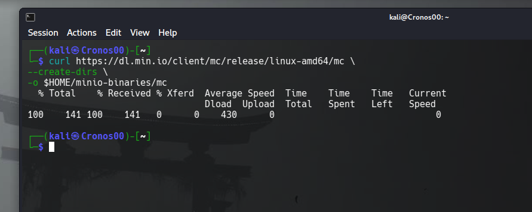
chmod +x $HOME/minio-binaries/mc
export PATH=$PATH:$HOME/minio-binaries/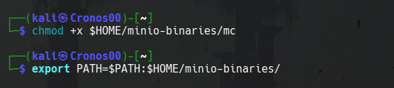
Registramos un alias apuntando al backend interno con las credenciales filtradas:
mc alias set skyfall http://prd23-s3-backend.skyfall.htb 5GrE1B2YGGyZzNHZaIww GkpjkmiVmpFuL2d3oRx0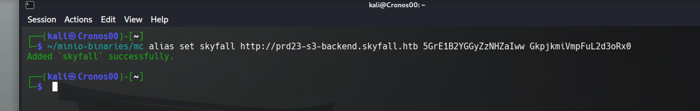
Listamos los buckets disponibles y aparece un bucket por cada usuario de la aplicación:
mc ls skyfall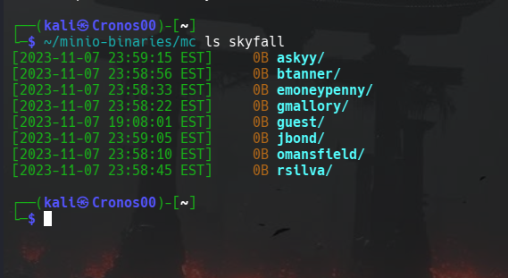
Los nombres (askyy, btanner, emoneypenny, gmallory, jbond, omansfield, rsilva) son en realidad un guiño a personajes de la película Skyfall de James Bond. Listamos el contenido recursivo de todos los buckets:
mc ls --recursive skyfall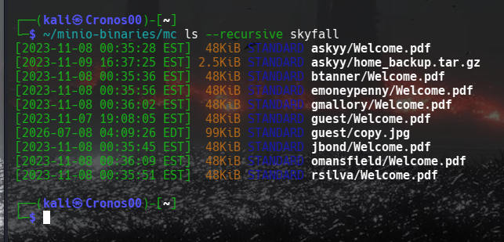
Todos los usuarios tienen únicamente su Welcome.pdf, excepto askyy, que tiene además un home_backup.tar.gz: un backup de su directorio home. Lo bajamos:
mc cp skyfall/askyy/home_backup.tar.gz .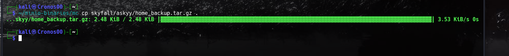
Lo extraemos para revisar su contenido:
mkdir -p home_backup
tar xzf home_backup.tar.gz -C home_backup/
ls -la home_backup/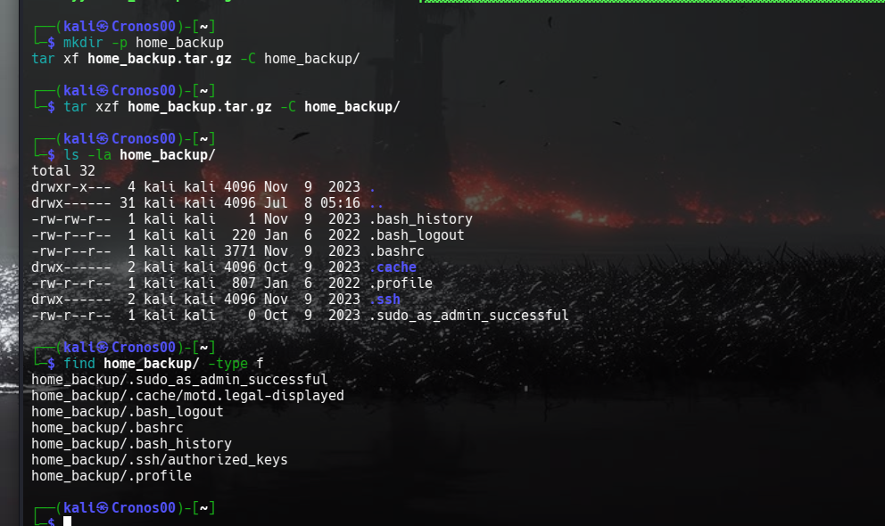
A simple vista es un home bastante limpio: .bash_history casi vacío, .bashrc, .ssh, nada que llame demasiado la atención todavía.
8. Versionado de buckets: recuperando secretos borrados
Como el backend es MinIO, y MinIO soporta versionado de objetos al estilo S3, vale la pena revisar si existen versiones anteriores de ese mismo archivo:
mc ls -r --versions skyfall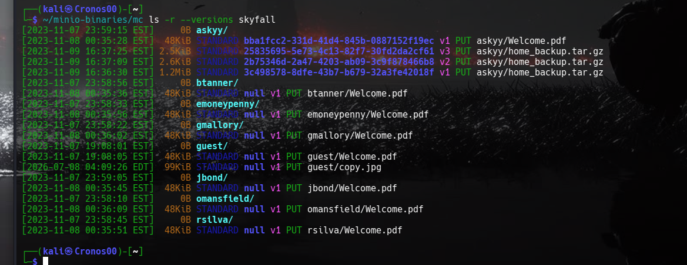
Efectivamente, home_backup.tar.gz tiene tres versiones: la v1 pesa 1.2MiB, mucho más que la versión actual (2.5KiB). Alguien fue "limpiando" ese backup con el tiempo. Descargamos las versiones anteriores por su version-id:
mc cp --version-id 2b75346d-2a47-4203-ab09-3c9f878466b8 skyfall/askyy/home_backup.tar.gz ./home_backup_v2.tar.gz
mc cp --version-id 3c498578-8dfe-43b7-b679-32a3fe42018f skyfall/askyy/home_backup.tar.gz ./home_backup_v1.tar.gz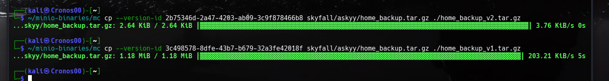
Extraemos ambas versiones en carpetas separadas:
mkdir home_backup_v2
mkdir home_backup_v1
tar -xf home_backup_v2.tar.gz -C home_backup_v2
tar -xf home_backup_v1.tar.gz -C home_backup_v1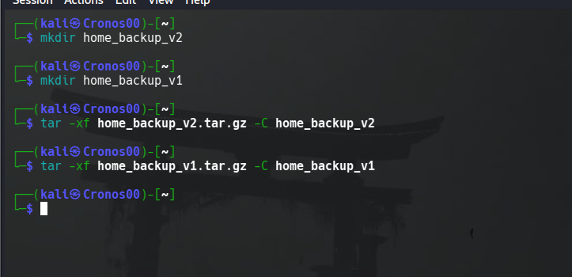
La v1 (la más antigua y pesada) trae bastante más contenido: un .bash_history real de 10KB y hasta una carpeta terraform-generator que no está en la versión actual.
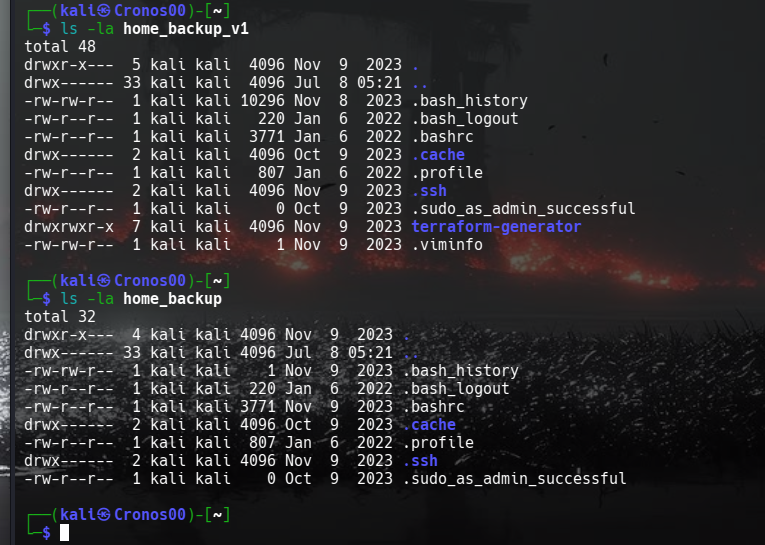
Comparamos el .bashrc de la versión intermedia (v2) contra el actual, por si quedó algo que después se borró:
diff home_backup_v2/.bashrc home_backup/.bashrc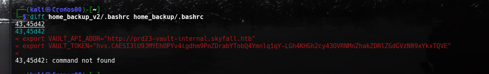
Bingo. La v2 exportaba dos variables de entorno que en la versión final ya no existen:
export VAULT_API_ADDR="http://prd23-vault-internal.skyfall.htb"
export VAULT_TOKEN="hvs.CAESIJlU9JMYEhOPYv4igdhm9PnZDrabYTobQ4Ymnlq1qY-LGh4KHGh2cy43OVRNMnZhakZDRlZGdGVzN09xYkxTQVE"El versionado de MinIO nos permitió recuperar un token de HashiCorp Vault que el propio askyy había limpiado de su .bashrc en algún momento, pero que sigue viviendo en una versión anterior del backup.
9. Pivote a HashiCorp Vault
Agregamos el nuevo hostname interno a /etc/hosts y exportamos las variables recuperadas:
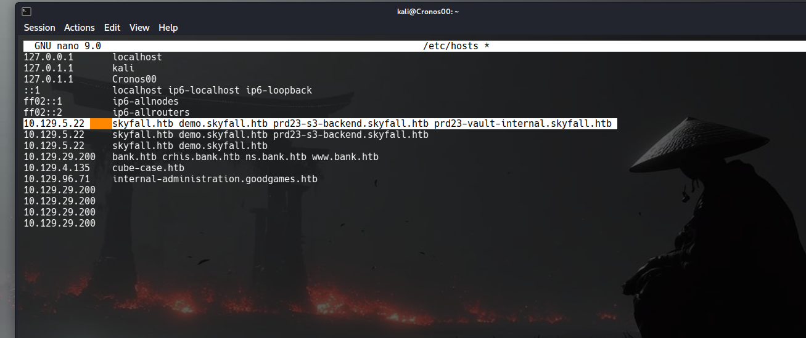
export VAULT_ADDR="http://prd23-vault-internal.skyfall.htb"
export VAULT_API_ADDR="http://prd23-vault-internal.skyfall.htb"
export VAULT_TOKEN="hvs.CAESIJlU9JMYEhOPYv4igdhm9PnZDrabYTobQ4Ymnlq1qY-LGh4KHGh2cy43OVRNMnZhakZDRlZGdGVzN09xYkxTQVE"
vault token lookup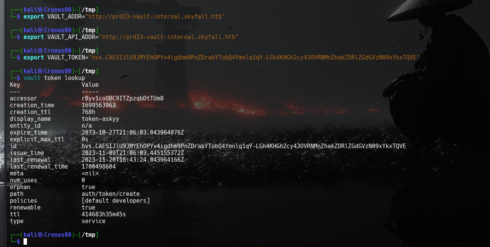
El token es válido, pertenece a token-askyy y tiene asociada la política developers. Intentamos listar los secret engines montados, pero la política no nos deja:
vault secrets list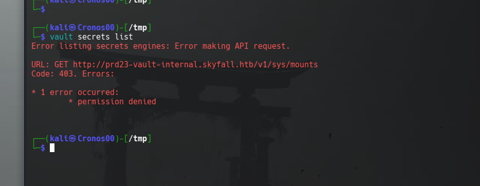
Probamos a listar el path ssh directamente, ya que por el nombre huele a un secrets engine SSH:
vault list ssh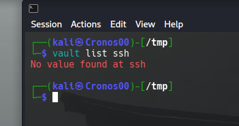
No hay valor en la raíz, pero si probamos el subpath roles sí tenemos permiso de listar:
vault list ssh/roles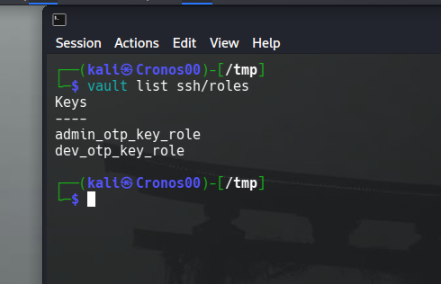
Aparecen dos roles: admin_otp_key_role y dev_otp_key_role. Esto es el backend SSH de Vault en modo OTP (One-Time-Password): permite generar contraseñas de un solo uso para conectarse por SSH a un host sin exponer ninguna clave privada. Antes de usarlo, intentamos leer las políticas para saber exactamente qué permisos tenemos:
vault token capabilities policies
vault token capabilities policies/list
vault token capabilities policies/read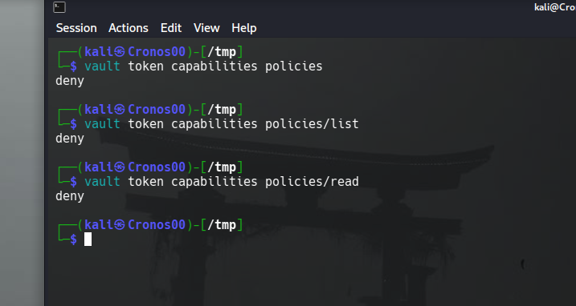
vault policy list
vault policy read default
vault policy read developer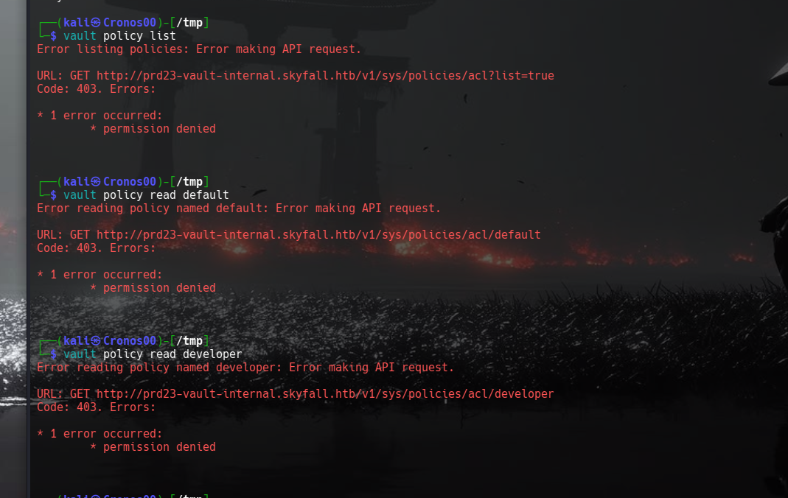
Todo nos devuelve permission denied usando la CLI. La política developers no nos deja leer políticas por el path nuevo de la API (sys/policies/acl/...).
10. Bypass de política y acceso SSH vía OTP
El truco está en que la política habla del path viejo (legacy) de Vault, no del nuevo que usa la CLI por defecto. Probamos consultarlo directo con curl contra el endpoint legacy sys/policy/<nombre>:
curl -s -XGET "http://prd23-vault-internal.skyfall.htb/v1/sys/policy/developers" \
-H "X-Vault-Token: hvs.CAESIJlU9JMYEhOPYv4igdhm9PnZDrabYTobQ4Ymnlq1qY-LGh4KHGh2cy43OVRNMnZhakZDRlZGdGVzN09xYkxTQVE" | jq .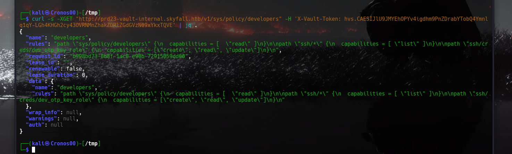
Funciona: la política sí tiene permiso de read sobre sys/policy/developers (el path legacy), aunque no sobre sys/policies/acl/developers (el path nuevo que usa la CLI). Formateamos las reglas para leerlas mejor:
curl -s -XGET "http://prd23-vault-internal.skyfall.htb/v1/sys/policy/developers" \
-H "X-Vault-Token: hvs.CAESIJlU9JMYEhOPYv4igdhm9PnZDrabYTobQ4Ymnlq1qY-LGh4KHGh2cy43OVRNMnZhakZDRlZGdGVzN09xYkxTQVE" | jq '.rules' -r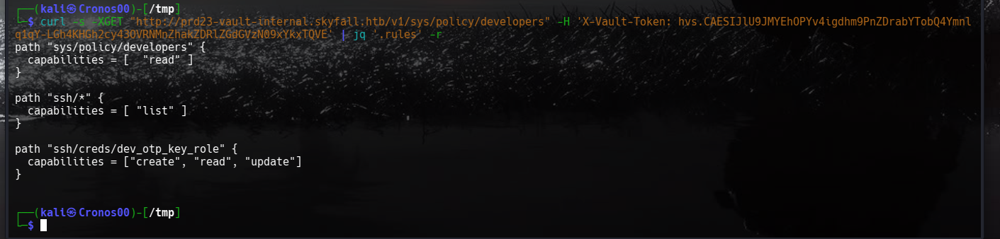
La política developers nos da list sobre ssh/* y, sobre todo, create, read y update en ssh/creds/dev_otp_key_role. Confirmamos el resumen de capacidades efectivas de nuestro token con:
vault read sys/internal/ui/resultant-acl --format=json | jq -r .data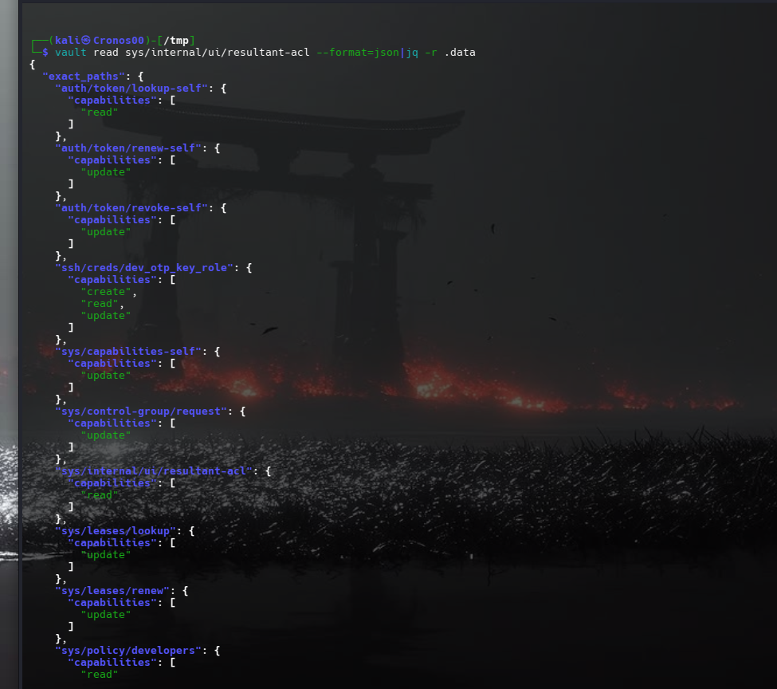
Con eso claro, pedimos una credencial OTP para conectarnos como askyy usando el rol dev_otp_key_role:
vault ssh -role dev_otp_key_role -mode otp askyy@skyfall.htb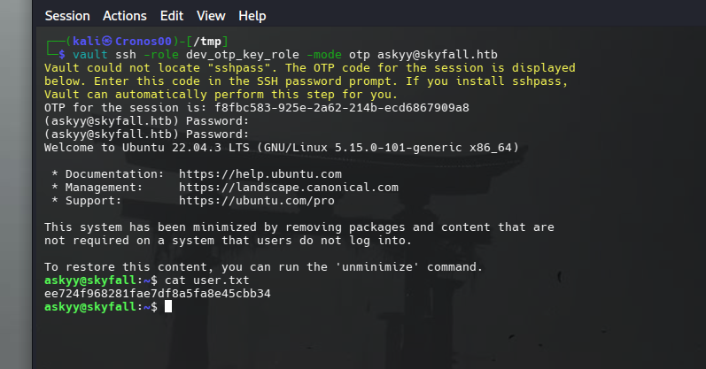
Vault genera un código OTP de un solo uso, lo usamos como contraseña de SSH y entramos directo como askyy. Ahí mismo capturamos la primera flag:
cat user.txt11. Escalada de privilegios
Ya dentro como askyy, hacemos enumeración local rápida. Primero confirmamos que no hay más usuarios interactivos en el sistema:
ls /home
grep "sh$" /etc/passwd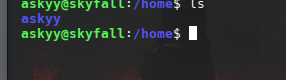
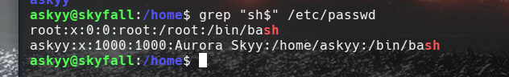
Solo root y askyy tienen bash como shell, así que no hay más movimiento lateral posible: la escalada tiene que ser directa a root. Revisamos qué podemos ejecutar con sudo:
sudo -l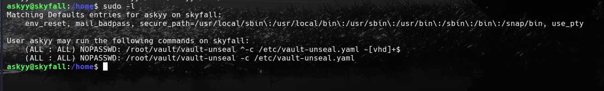
Podemos ejecutar como root, sin contraseña, un binario propio llamado vault-unseal, encargado de reabrir (unseal) el Vault interno usando un archivo de configuración. Miramos su ayuda:
sudo /root/vault/vault-unseal -c /etc/vault-unseal.yaml -h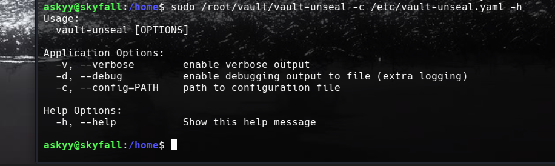
Entre las opciones aparece un flag de depuración (-d/--debug) que promete "habilitar salida de debugging extra hacia un archivo". Como el binario corre con privilegios de root pero nosotros controlamos desde dónde se ejecuta, lo lanzamos en modo verbose + debug:
sudo /root/vault/vault-unseal -c /etc/vault-unseal.yaml -vd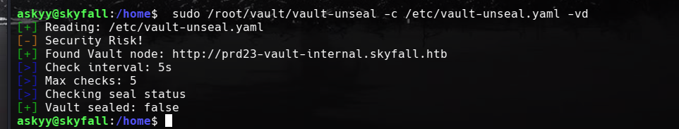
El propio binario advierte "Security Risk!" al leer el YAML: el archivo de configuración de auto-unseal contiene credenciales sensibles de Vault en texto plano, y al correr en modo debug esas credenciales terminan también en el log que el proceso escribe. Como ese log queda accesible en el directorio desde el que ejecutamos el comando, terminamos con un token de Vault de nivel root en nuestras manos.
Exportamos ese nuevo token y pedimos ahora una credencial OTP con el rol de administrador para conectarnos directamente como root a la máquina objetivo:
export VAULT_ADDR="http://prd23-vault-internal.skyfall.htb"
export VAULT_TOKEN="hvs.I0ewVsmaKU1SwVZAKR3T0mmG"
vault ssh -role admin_otp_key_role -mode otp root@10.129.5.22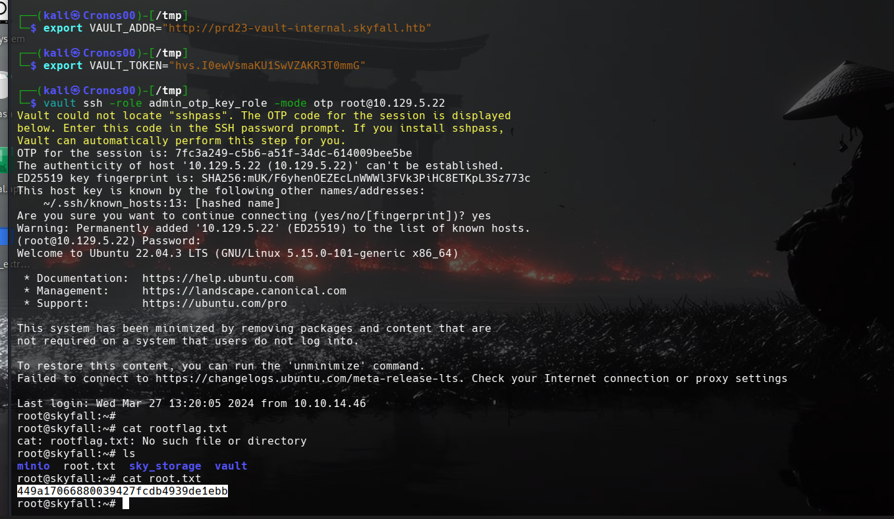
Con el token root de Vault, el rol admin_otp_key_role sí nos permite generar un OTP para root@10.129.5.22. Entramos directo como root y leemos la flag final:
cat root.txt12. Conclusión
Skyfall resume bastante bien lo que significa auditar infraestructura moderna: no hubo un solo exploit "mágico", sino una cadena de configuraciones de infraestructura mal aisladas entre sí. Un bypass de ACL por diferencias de parseo entre nginx y Flask nos abrió la puerta a un endpoint interno de MinIO; ese endpoint filtró credenciales root por una vulnerabilidad conocida (CVE-2023-28432); el versionado de objetos de MinIO nos dejó recuperar un secreto de Vault que ya había sido "limpiado"; y una diferencia entre el API legacy y el API nuevo de Vault nos permitió leer una política que la CLI nos negaba. La escalada final fue, otra vez, un problema de confianza: un binario con sudo que loggea secretos en texto plano cuando se le pide más verbosidad.